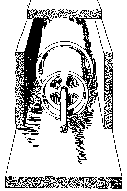

|
|
Search |
Published in:
See also:
- Power for A Continent, part of the Continental Hydrology pamphlet. This was adapted from an article published in Technocracy in the late 30's.
- Electrical Review has a page of links to many related pages
Over fifty years ago Technocracy foresaw the advantages of direct current (D.C.) over alternating current (A.C.) for long distance electrical transmission. At that time a design proposal for such a line was advanced by the organization. Technocracy's proposal was ignored by the "experts". Their requirement was profit, and A.C. transmission was there to exploit. The technology for conversion between A.C. and D.C. did not exist, as yet, plus pressurized gas-filled transmission lines were unheard of. Since that time these technologies have been developed to a high degree, and several D.C. lines are now in existence.
Members of Technocracy Inc. can take satisfaction in seeing industry finally becoming interested in long distance power transmission by direct current. The fact that it is being done for profit does not diminish the result, but it should be noted that power transmission in the pursuit of profit is wasteful of time and materials. It would be far better to operate directly for human benefit. It is a sad commentary on the lack of vision of the leadership of the utility industry that it is unable to raise its sights above the petty urgencies of the moment and see the view of what could be if their technologies could be applied for the general benefit of North Americans as a whole.
With the onset of the greenhouse effect there is a great need for power production that does not contribute to it by producing carbon dioxide and other pollutants. Therefore the need is for power production processes that do not rely on combustion, such as hydroelectricity, solar power, windpower, geothermal and so forth.
The problem is that most such power sources are far from the places where the power is needed. Large geothermal power sources exist along the west coast of North America. The best sites for windpower exist in the mid-west. Solar power would be best used in the southwest desert country such as the state of New Mexico or Arizona. Much hydropower could be utilized without building another dam. There are some 50,000 dams in the U.S. alone that produce no power and conversion is a simple matter.
Hydropower has gotten a bad name of late due to the disappearance of anadromous fish. This is a problem that should never have arisen. A little bit of study could have allowed for fish passage without difficulty. This is also a problem that is typical of price system planning. There were plenty of fish at the time, but power was needed to make money.
It should be noted that there are many reasons for the disappearance of the fish other than the construction of dams, although dams are the most visible cause. The spawning beds required by the fish for reproduction have been badly damaged by agricultural practice and logging. The decimation of fish stocks by the high technology of fishing fleets goes mostly unmentioned. There are a fair number of rivers whose fish stocks have been virtually destroyed that have no dams at all.
A vital service provided by dams that has nothing to do with power production is the conservation of fresh water resources. As the greenhouse effect inexorably begins to produce its devastating effects, and our aquifers are drawn to exhaustion, fresh water could become a lynch pin of civilization.
There is also a supply and demand problem. That is, the demand and supply do not coincide. The wind does not blow at the same time that the power is needed. The sun does not shine at night, but power is still needed. The solution to this problem is to have a large number of power sources on the transmission line so that when one or even several of them are out of action others pick up the load.
High voltages are needed for long distance power transmission because high voltage requires less current for the same amount of power transmitted, although, only alternating current can be transformed from one voltage level to another. Alternating current is necessary to step up the power to the proper voltage level when power is output from the line to the user. The more current that flows through a line the hotter it becomes, and it is heat that limits the amount of power that a line can carry. Alternating current tends to flow on the outer circumference of a conductor, while direct current tends to flow through the whole cross-section of the conductor. Most A.C. power is transmitted in three-phase configuration requiring three conductors. Direct current power needs only two conductors.
Technocracy Inc. proposed the interconnection of the North American Continent with a bipolar direct current power transmission grid composed of gas insulated bus (conductor) buried in concrete tunnel-ways that could be installed on existing right- of-way. Such an installation would be expensive, no matter how the cost is calculated, but would be well worth the cost. Such lines would be much more efficient so that as more such lines were constructed power stations could be retired.
Such a grid would mean that only the most efficient and least polluting power generating units would have to be utilized. Power could be sent from California to New York if necessary or desirable. Transmission rights-of-way would be reduced to so small a width as to be barely visible.
Much of the present transmission system above 230 kilovolts A.C. would become unnecessary. The additional stability provided to the lower voltage alternating current local grids would mean increased reliability and result in fewer local transmission lines. This would mean that thousands of acres of land could now be returned to other uses. This could include the planting of trees to mitigate the consequences of the greenhouse effect. In the area of the five states of the Pacific Northwest United States, which is the service area of the Bonneville Power Administration, the area covered by transmission lines is approximately 275,000 acres.
The ability to transmit power from any area to any other area would make unnecessary much standby power, which is used to service peak loads. Every power utility currently operating must keep a certain amount of generation ready for peak loads when they occur. Peak loads in cities generally occur about five o'clock in the evening when people come home from work. If the load were spread out across the continent, the evening peak load would be significantly reduced. This means that a fair percentage of power would not be needed because it could be transported from other areas not currently experiencing a peak load.
Technocracy proposed that the lines be underground, although not buried in the ground. This would make them far less vulnerable to either natural damage or to damage by man and would result in less maintenance. Direct current lines have the additional advantage that if either pole (positive or negative) becomes inoperable, the ground can be used for the return, as long as it is not done very often due to the corrosion it causes to buried pipelines. This also means that should one area need a large amount of power for a short time period, both conductors could be made into one pole over which twice the power could be sent while using the ground for a return.
The power capacity (ampacity) of a gas insulated bus can be increased substantially over the initial design capacity by increasing the gas pressure, adding cooling, or both. Therefore, provisions for cooling the line should be allowed for in the design even if cooling is not to be applied immediately. The gas insulator would have to be able to be freely circulated between line segments, and cooling stations should be built along the right-of-way. Cooling would have to be proven to be economical before being applied. That is, just how much additional energy would be obtained, and what would be the cost of the project in terms of energy or dollars.

Technocracy Inc. realizes that its proposal is not a design. There are many questions to be answered. The original proposal called for nitrogen gas as the insulator, but sulfur-hexafluoride is in common use today. If a line were ruptured for some reason, a release of nitrogen would present no problems, but a release of sulfur hexafluoride quite probably would. Sulfur hexafluoride must be manufactured, whereas nitrogen is simply distilled out of the air.
Quite probably the only really fundamental technological barrier to the construction of such a line would be the materials that comprise the insulators that center the conductor in the line separating the central conductor from its oppositely charged outer conductor. Under stress from the constant D.C. voltage, charge carriers within the material tend to separate in time and drift through the material. After a while the material is no longer a good insulator. This is a materials problem that the application of research should be capable of solving. The answer most certainly lies in the area of polymeric or ceramic materials.
Should the line be continuous (if possible), or should it consist of segments requiring interconnection? The inerconnection between line segments would have to be of a careful mechanical and electrical design. The line segments should be designed with automated manufacture and installation in mind.
Machines to be used for the installation of the line would have to be designed to automate the process as highly as possible. Machines for earth removal and disposal should be designed. Machines for casting the concrete trench-way in place could be designed. Possibly an automated plant manufacturing prefabricated structures could be designed with completed parts trucked to the construction site.
Fiber optic cables running through the line could protect the mechanical integrity of the line, warning of any impending failures. Stations would have to be designed. Research and development of solid state valves should be implemented both for the purpose of improving valve performance and for developing expertise in D.C. transmission systems. Most expertise in the area has now been surrendered to other nations. The line and probably much of the equipment would have to undergo a design iteration phase before arriving at a final design.
With a cableway in place for a D.C. line, gas transmission lines should also be installed in them as well as communication lines. Eventually hydrogen could be piped to any place it was needed. The sole waste product of hydrogen combustion is water. The use of hydrogen as a fuel has been thoroughly discussed in many other articles.
The D.C. option is becoming less of an option and more of a necessity as physical events begin to close in on North America. The steady decline in world oil reserves will require their more efficient and careful use. Acid rain and air pollution caused by the burning of hydrocarbon fuels will become intolerable if not brought under control. The most ominous trend of all, the greenhouse effect, may threaten the existence of us all by adding more carbon dioxide to the earth's atmosphere. Automobiles are, by far, the worst offenders in every area of air pollution, although power production is still a serious offender, and reduction of that problem should be a major concern. Consumption of irreplaceable natural resources when a superior technology exists is inexcusable.
Technocracy Inc. invites the people of North America to raise their eyes above the profit and loss statements of their individual fiefdoms and see the world that not only can be, but must be -- if we are to survive. Please do not say that it's not your job. If you can understand the problem, it is your responsibility to do what you can to contribute to its solution. Technocracy Inc. needs your support; North America needs your help.
Copyright © 1992 Technocracy, Inc.